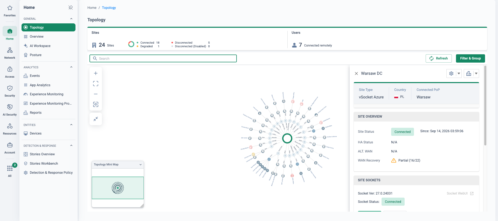
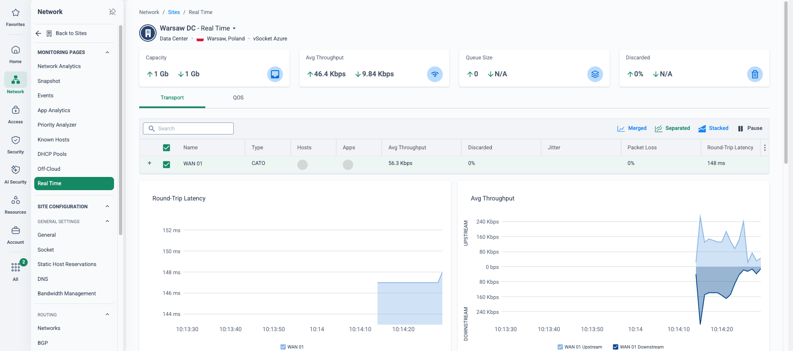

Why this matters
The cloud is where the datacentre went. But while branches and physical DCs sit on the corporate WAN, the average VPC or VNet connects through a different stack entirely: a premium interconnect product back to a hub, virtual firewall appliances for security, and cloud-native tooling for whatever visibility exists. Every cloud region added repeats the pattern — more circuits, more appliances, more policy to keep in sync.
The objective: treat every VPC and VNet as just another site on the WAN — same policy, same visibility, same optimisation as Glasgow or the London DC. Branch users reach cloud workloads across the private backbone; the WAN firewall governs the path; traffic egresses at the Cato PoP nearest the cloud region, not across the public internet.
Cloud DCs as islands
Two spending patterns show up in almost every cloud estate — and neither actually delivers WAN-grade connectivity or consistent security:
Premium interconnects
- ExpressRoute / Direct Connect circuits per region, per hub
- Recurring circuit and port charges on top of cloud spend
- Provisioning lead times, contracts, carrier coordination
- Connectivity only — no inspection, no policy on the path
- Branch traffic still hairpins through a physical DC to get there
Cloud virtual firewalls
- NGFW instances deployed and licensed per VPC/VNet
- A second (or third) policy stack to author and audit
- You own sizing, HA design, upgrades and failover testing
- Separate logging — cloud flows invisible to WAN tooling
- Policy drift between cloud and on-prem is the norm
“What do your interconnect circuits and cloud firewall licences cost per year — and after all that spend, which single console shows the policy between a branch user and your production VPC?”
Three ways in — all live in your demo tenant
Cato gives you three ways to bring a cloud datacentre onto the WAN. They are not alternatives to choose once — most estates mix them by region and requirement, and your demo tenant runs all three side by side.
| Method | How it connects | Choose it when | Live in your demo tenant |
|---|---|---|---|
| vSocket | Cato Socket as a virtual appliance inside the VNet/VPC, encrypted tunnels to the nearest PoP; deployable as an HA pair | You want the full site experience — WAN optimisation, QoS, deep analytics — inside the cloud network | “Azure-UKS-Hub-vSocket” (Azure, HA pair) · “AWS eu-west-2” (HA pair) · a second AWS vSocket (Dublin) |
| IPsec | IKEv2 tunnels from the cloud provider’s native gateway straight to a Cato PoP — no VM footprint at all | You already run Azure Virtual WAN / cloud VPN gateways, or want a region connected in minutes | an Azure vWAN hub site · “aws-sydney-ipsec” (Sydney) |
| Cross-Connect | Private layer-2 link between the cloud provider edge and the Cato PoP in the same facility — no tunnel overhead | You need the highest throughput and deterministic latency into a major region | a Cloud Interconnect site |
Whatever the method, the cloud site lands on the same backbone, in the same policy set, with the same analytics as every physical site — and egress to the VPC happens at the PoP nearest the cloud region. No ExpressRoute or Direct Connect subscription, no virtual firewall fleet to size and patch.
Where this sits in the Cato SASE platform
- Branch traffic bound for a cloud workload enters the nearest PoP and crosses the private backbone.
- The cloud DC attaches by vSocket HA pair, IPsec from a native gateway or a layer-2 cross-connect at the PoP.
- The WAN firewall governs branch-to-VPC traffic with the same rulebase and audit trail as physical sites.
- Traffic egresses to the VPC at the PoP nearest the cloud region, never across the public internet.
Cloud DCs as first-class WAN sites
Once connected, a cloud datacentre behaves exactly like the London DC: it appears in the topology, participates in WAN routing, is governed by the WAN firewall, and every flow to and from it is visible in App Analytics. A user in Glasgow reaching an app in the AWS VPC traverses the private backbone end to end — one policy decision, one audit trail, no internet middle mile.
On the WAN in about an hour
Deploy the vSocket from the cloud marketplace or as code, and the VPC/VNet is a routed, policy-governed WAN site — no circuits to order.
HA pairs, managed for you
vSockets deploy as primary/secondary pairs with automatic failover — an AWS vSocket site (eu-west-2) and the Azure hub both run HA in your demo tenant.
Consistent security everywhere
The WAN firewall sits between the branch and the VPC — one rule base and one audit trail covering cloud and physical sites alike.
Full flow visibility
Every flow to and from the cloud DC lands in App Analytics and Events — the visibility cloud virtual firewalls never gave the network team.

How to run the demo
Which clouds and regions run production workloads? How do branches reach them today — via a hub DC, ExpressRoute/Direct Connect, cloud VPN? Who owns the firewalls in the cloud? Anchor each step below to their answers.
-
Show cloud sites in the topology
Monitor → Topology
Point out the cloud sites connected alongside the physical estate: Azure-UKS-Hub-vSocket (Azure) and an AWS vSocket site (eu-west-2) plus a second AWS vSocket (Dublin), an Azure vWAN hub site and aws-sydney-ipsec over IPsec, and a Cloud Interconnect site. They render exactly like Glasgow or the London DC — that is the point.
-
Open the HA pair
Network → Sites
Open an AWS vSocket site (eu-west-2) and show the high-availability status: primary and secondary vSocket, both tunnelled to the PoP, with automatic failover. Contrast with designing, licensing and failover-testing an HA firewall pair yourself.
-
Show the branch-to-VPC firewall rule
Security → WAN Firewall
Walk a rule allowing a branch user group to a specific application hosted in the AWS VPC. Same rule anatomy as branch-to-DC: source, destination site, app, action, track. One policy governs cloud and physical alike.
-
Prove the visibility
Monitor → App Analytics
Filter analytics to the VPC site: applications, users, flows and throughput to the cloud DC, fully attributed. “This is the view your cloud virtual firewalls never gave the network team.”
-
Discuss method selection
Use the comparison table above: vSocket for the full site experience inside the VPC/VNet, IPsec from cloud-native gateways for speed and zero footprint, cross-connect for maximum throughput into a major region. All three coexist in this one tenant.
-
Close on the economics
No ExpressRoute or Direct Connect subscription, no virtual firewall fleet, and the next cloud region joins the WAN in about an hour — with policy and visibility already in place.
How to prove it in the customer's tenant
The demo shows three connection methods living side by side; the PoV proves one of them on the customer's own cloud estate. Run it inside the frame from Running a Cato PoV: success criteria agreed at the scope workshop before anything is deployed, and every result captured as a dated artefact against its criterion. The pilot shape is deliberately small — one vSocket site in the customer's primary cloud (AWS or Azure, whichever runs the production workloads), one branch socket and a pilot group of remote users reaching it. Nothing is blocked and nothing is migrated: the pilot proves that a VPC or VNet can be a first-class WAN site, governed by the same policy as everything else.
Success criteria
Four criteria cover the cloud-datacentre story. Agree the exact wording, the pilot VPC/VNet and the failover change window at the workshop, then put each row on the test-case register:
| Criterion | What we demonstrate | Evidence artefact | Where it lives in the CMA |
|---|---|---|---|
| Cloud DC live on the WAN | A vSocket HA pair deployed in the pilot VPC (the AWS eu-west-2 archetype — or an Azure VNet per the estate), both members tunnelled to the nearest PoP, site rendered in the topology beside the physical estate | Topology view with the cloud site connected; site HA status showing primary active, secondary standby, keepalive Ok | Monitor → Topology · Network → Sites |
| One rule, three source types | The pilot workload reached from a branch site, from the datacentre socket and from a remote user on the Cato Client — all matched by the same WAN Firewall rule | The single rule in the rulebase, plus its events showing site and SDP-user sources against the cloud-site destination, fully attributed | Security → WAN Firewall · Home → Events |
| Throughput sanity check | A repeatable timed transfer, branch → VPC across the backbone, with results consistent with the configured WAN bandwidth and the vSocket instance size — scale the instance if it is the bottleneck | Transfer timings alongside the real-time throughput graphs for the cloud site, captured on the same run | Network → Sites → Site Monitoring → Real Time |
| HA failover demonstrated | The primary vSocket stopped in an agreed change window; the secondary takes over as active and the workload remains reachable from the branch | HA status before/during/after, the cloud route table showing the next hop moved to the secondary (AWS) or the floating IP re-bound (Azure), and the reachability check either side | Network → Sites · Home → Events |
- Scope: one pilot VPC/VNet with a representative workload, one branch socket and a pilot group of remote users already connecting via the Cato Client.
- Cloud-side permissions: on AWS, rights to use the Marketplace, launch the CloudFormation template, create IAM roles and key pairs (Marketplace deployment guide); on Azure, owner permissions on the relevant resource groups — the HA script creates a managed identity with the Contributor role on both VMs (Azure vSocket HA).
- Network plumbing (AWS): three subnets — MGMT, WAN and LAN — plus a dedicated LAN subnet for the secondary in HA; two Elastic IPs (WAN and MGMT); remember AWS reserves the first IP addresses of each subnet, so ENI addresses must avoid them (manual deployment reference).
- Public DNS: both vSockets must be able to resolve public DNS — a private-DNS-only VPC will break HA API calls and registration.
- Licences: a site licence for the cloud site plus the existing branch/SDP scope. TLS inspection is not needed — this is a transport-and-policy PoV, which keeps privacy sign-off out of the critical path.
- Change window: booked for the failover test, with the cloud platform team in the room — they own the console you will be stopping an instance in.
Configuration walkthrough
-
Create the cloud site in the CMA
Network → Sites
Create a site of type vSocket AWS (or the Azure equivalent). The native range must match the LAN subnet of the VPC exactly, and the WAN interface bandwidth should be set to what you intend to prove — the QoS engine is only as honest as these figures. The CMA generates a unique serial number for the site; copy it, because the cloud-side template asks for it (AWS vSocket sites).
-
Deploy the vSocket from the cloud marketplace
On AWS, subscribe to the Cato Networks Virtual Socket listing and launch the CloudFormation template: VPC and subnet ranges, ENI addresses for MGMT/WAN/LAN, your key pair, the serial number from step 1, and a minimal ingress range on the security group. Pick a certified instance type — the KB suggests c5n.xlarge for sites with bandwidth above 2 Gbps; smaller certified types suit a pilot. Reboot the VM after deployment — it is a documented requirement for the vSocket to connect to the Cato Cloud. On Azure, use the Marketplace or deployment script; the default size for new deployments is Standard_D8ls_v5, and accelerated networking is mandatory on that size (Azure vSocket sites).
-
Wire the routing — and agree who owns it
Network → Sites → Site Configuration → Networks
Cloud side: the LAN route table sends 0.0.0.0/0 to the vSocket's LAN ENI, the WAN and MGMT subnets route via the internet gateway, and source/destination checking is disabled on the LAN interface (AWS) or IP forwarding enabled on all three NICs (Azure) so the instance may forward traffic. Cato side: the native range came in at step 1; add any further VPC ranges as routed ranges with the gateway set to the VPC router — the first host IP of the native-range subnet. Write down which team owns the cloud route tables: a well-meaning "correction" mid-PoV is a classic silent breakage.
-
Add the secondary vSocket and validate HA
Network → Sites
Deploy the secondary into its own LAN subnet (same AZ or a second one — cross-AZ needs per-AZ WAN and MGMT subnets), associate both LAN subnets with the same route table, and open UDP 20480 bidirectionally between the LAN interfaces for keepalives. Failover works by the secondary calling the AWS API to repoint the LAN route table at its own ENI, so both instances need an IAM role allowing exactly this:
"Action": [ "ec2:CreateRoute", "ec2:DescribeRouteTables", "ec2:ReplaceRoute" ]
Validate with the API Test Tool in the Socket WebUI before the change window — it confirms the IAM permissions and route-table ID without failing anything over, provided the vSocket can resolve the regional AWS API domain (AWS vSocket HA). On Azure the mechanism differs: a floating IP moves between NICs at failover, driven by the managed identity created by the HA script.
-
Build the one WAN Firewall rule
Security → WAN Firewall
One rule proves the policy story: source = the pilot branch site, the datacentre site and the pilot SDP user group; destination = the cloud site (or the workload host); action Allow with Track set to Event. Resist building more — the point is that a single rule, in the same rulebase that governs the physical estate, covers every path to the VPC. Everything else stays untouched: monitor-first, nothing blocked.
-
Run the evidence days
Monitor → Topology Home → Events
Reachability: hit the workload from the branch, from the DC and from a remote user's Client; filter Events to the rule and capture the three source types against one destination. Throughput: the same timed transfer, branch → VPC, repeated at the same hour, read against the site's real-time graphs. Failover: in the window, stop the primary instance from the cloud console; watch the secondary announce itself, the route table repoint, and the branch's session to the workload continue or re-establish. Bring the instance back and confirm the pair returns to primary-active. Every capture goes into the evidence register dated, against its criterion, on the day it happens.
What good output looks like
By the wrap-up the register should hold four artefact sets: the topology and HA-status pair proving the cloud DC is a first-class site; the single WAN Firewall rule beside its events showing site, datacentre and SDP-user sources reaching the VPC; the transfer timings against the real-time throughput graphs; and the failover sequence — keepalive Ok, primary stopped, secondary active, route table repointed, service reachable. If the estate is Virtual-WAN-centric, add the honest comparison as a fifth artefact: an IPsec IKEv2 site from the vWAN hub connects with no VM footprint at all, BGP-peered to two PoPs for redundancy, and Cato's Terraform module stands the whole integration up in roughly 30 minutes (Azure vWAN integration) — the trade-off is that bandwidth is configured per tunnel and there is no socket inside the VNet, so where deep site analytics and the QoS engine matter, the vSocket remains the answer (IPsec IKEv2 sites). Cross-connect throughput cases belong in the companion page, Cloud Interconnect.


Troubleshooting
vSocket deployed but never connects
Three usual causes, in order: the post-deployment reboot was skipped (it is required before the vSocket connects), the security group is not allowing all outbound traffic to reach the Cato Cloud, or the VPC cannot resolve public DNS. Fix the cloud plumbing before touching the site config.
Site is up but workloads unreachable
The instance is forwarding-hostile by default: on AWS, source/destination checking must be disabled on the LAN ENI; on Azure, IP forwarding must be enabled on the NICs. If the tunnel is green and pings die at the vSocket, this is where to look.
Routing table "fixed" mid-PoV
The LAN route table must point 0.0.0.0/0 at the vSocket's LAN ENI, and HA needs both LAN subnets on that same table. Cloud teams tidy route tables; agree ownership in week one, and after failover remember it is the route table that moved — check there first, not the CMA.
HA shows "not ready" or failover test fails
Run the Socket WebUI API Test Tool. It will name the culprit: missing IAM actions (CreateRoute / DescribeRouteTables / ReplaceRoute), a wrong route-table ID, or no resolution of the regional AWS API domain. Also confirm UDP 20480 is open both ways between LAN interfaces — no keepalives, no HA.
Transfers stall on large payloads
Classic MTU. The effective MTU over a DTLS tunnel is 1383 bytes (1500 minus tunnel overhead) and LAN ports do not support jumbo frames. If a cloud security layer drops ICMP "fragmentation needed", path-MTU discovery breaks and big packets black-hole — allow it, or set MSS accordingly in the test harness.
Azure failover looks slow
By design: moving the floating IP is a NIC configuration update, and the KB states it can take up to 120 seconds. Write the Azure criterion accordingly — "reachable within two minutes" is honest and passable; "seamless" is neither.
Gotchas & exit
- AWS vSocket HA does not support BGP or alternative WAN links — the failover mechanism is the route-table API call, nothing else. If the design assumes BGP to the VPC, surface it at the workshop, not in week three.
- Don't promise line-rate numbers. The KB certifies instance types and suggests c5n.xlarge above 2 Gbps, but publishes no per-instance throughput table — so the criterion is a measured transfer consistent with the configured bandwidth, with instance resizing as the documented lever.
- The Azure HA identity is powerful. The script grants a managed identity Contributor on both VMs so it can rewrite NIC config at failover — brief the cloud security team before they find it themselves.
- Position IPsec/vWAN honestly. For a vWAN-centric estate, or a region needed in minutes, the IPsec site is the right first move and can be the PoV vehicle itself — just swap the HA criterion for primary/secondary tunnel redundancy across two PoPs.
Delete the PoV WAN Firewall rule, remove the cloud site from the CMA, then tear down the cloud side: delete the CloudFormation stack (or Azure resource group items), release the Elastic IPs, remove the HA IAM role or managed identity, and restore the LAN route table to its pre-PoV state — with the team that owns it watching. The evidence register is the one artefact that survives: it walks straight into the decision meeting, and if the verdict is yes, the same template redeploys the pilot as production in the next change window.